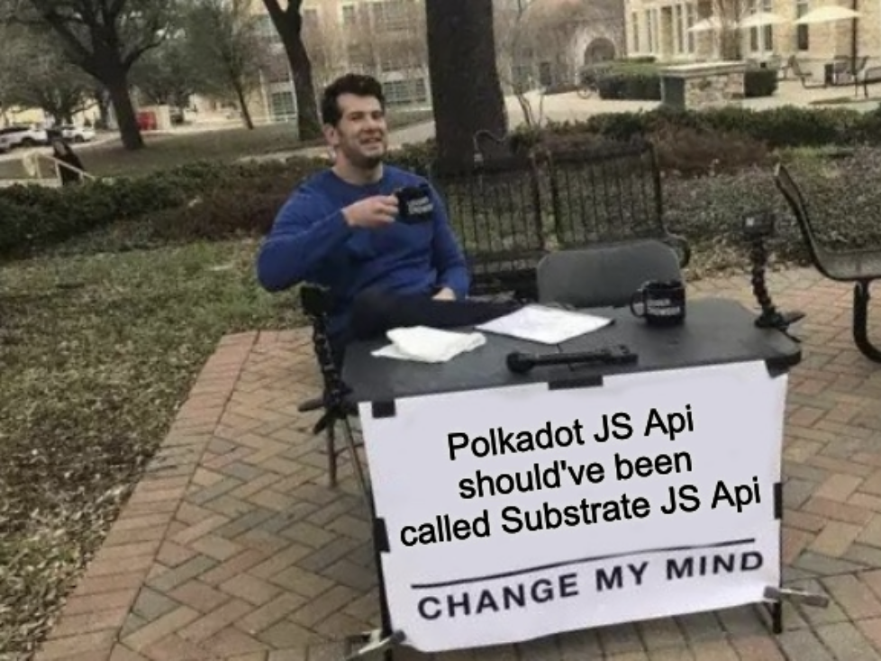

<!DOCTYPE html>
<html lang="en">

<head>
  <meta charset="utf-8" />
  <meta name="viewport" content="width=device-width, initial-scale=1.0, maximum-scale=1.0, user-scalable=no" />

  <title>Interacting With a Substrate Blockchain</title>
  <link rel="shortcut icon" href="./../../assets/favicon.ico" />
  <link rel="stylesheet" href="./../../dist/reset.css" />
  <link rel="stylesheet" href="./../../dist/reveal.css" />
  <link rel="stylesheet" href="./../../assets/styles/PBA-theme.css" id="theme" />
  <link rel="stylesheet" href="./../../css/highlight/shades-of-purple.css" />

  <link rel="stylesheet" href="./../.././assets/styles/custom-classes.css" />

</head>

<body class="site">
  <header class="site-header">
    <!-- This logo is a link only on the watching server, not the production build -->
    <a href="">
      
    </a>
  </header>
  <main class="reveal">
    <article class="slides">
      <section  data-markdown><script type="text/template">

# Interacting With a Substrate Blockchain
</script></section><section  data-markdown><script type="text/template">
## Interacting With a Substrate Blockchain


<aside class="notes"><p>Many of these interactions land in a wasm blob.</p>
<p>So what question you need to ask yourself there? which runtime blob.</p>
<p>almost all external communication happens over JSPN-RPC, so let&#39;s take a closer look.</p>
</aside></script></section><section ><section data-markdown><script type="text/template">
## JSON-RPC

> JSON-RPC is a remote procedure call protocol encoded in JSON. It is similar to the XML-RPC
> protocol, defining only a few data types and commands.
</script></section><section data-markdown><script type="text/template">
### JSON-RPC

```json
{
  "jsonrpc": "2.0",
  "method": "subtract",
  "params": { "minuend": 42, "subtrahend": 23 },
  "id": 3
}
```

<br/>

```json
{ "jsonrpc": "2.0", "result": 19, "id": 3 }
```

<!-- .element: class="fragment" -->
</script></section><section data-markdown><script type="text/template">
### JSON-RPC

- Entirely transport agnostic.
- Substrate based chains expose both `websocket` and `http` (or `wss` and `https`, if desired).

> with `--ws-port` and `--rpc-port`, 9944 and 9934 respectively.
</script></section><section data-markdown><script type="text/template">
### JSON-RPC

- JSON-RPC methods are conventionally written as `scope_method`

  - e.g. `rpc_methods`, `state_call`

- &shy;<!-- .element: class="fragment" --> `author`: for submitting stuff to the chain.
- &shy;<!-- .element: class="fragment" --> `chain`: for retrieving information about the _blockchain_ data.
- &shy;<!-- .element: class="fragment" --> `state`: for retrieving information about the _state_ data.
- &shy;<!-- .element: class="fragment" --> `system`: information about the chain.
- &shy;<!-- .element: class="fragment" --> `rpc`: information about the RPC endpoints.

<aside class="notes"><p>recall:</p>
<p><a href="https://paritytech.github.io/substrate/master/sc_rpc_api/index.html">https://paritytech.github.io/substrate/master/sc_rpc_api/index.html</a>
<a href="https://paritytech.github.io/substrate/master/sc_rpc/index.html">https://paritytech.github.io/substrate/master/sc_rpc/index.html</a></p>
<p>The full list can also be seen here: <a href="https://polkadot.js.org/docs/substrate/rpc/">https://polkadot.js.org/docs/substrate/rpc/</a></p>
</aside></script></section><section data-markdown><script type="text/template">
### JSON-RPC

- Let's look at a few examples:

- `system_name`, `system_chain`, `system_chainType`, `system_health`, `system_version`, `system_nodeRoles`, `rpc_methods`, `state_getRuntimeVersion`, `state_getMetadata`

```sh
wscat \
  -c wss://kusama-rpc.polkadot.io \
  -x '{"jsonrpc":"2.0", "id": 42, "method":"rpc_methods" }' \
  | jq
```
</script></section><section data-markdown><script type="text/template">
### JSON-RPC: Runtime Agnostic

- Needless to say, RPC methods are runtime agnostic. Nothing in the above tells you if FRAME is
  being used or not.
- <!-- .element: class="fragment" --> Except... metadata, to some extent.
</script></section><section data-markdown><script type="text/template">
### JSON-RPC: Runtime API

- While agnostic, many RPC calls land in a runtime API.
- &shy;<!-- .element: class="fragment" --> RPC Endpoints have an `at: Option<hash>`, runtime APIs do too, what a coincidence! 🌈
  - &shy;<!-- .element: class="fragment" --> Recall the scope `state`?
</script></section><section data-markdown><script type="text/template">
### JSON-RPC: Extending

- The runtime can extend more custom RPC methods, but the new trend is to move toward using `state_call`.
</script></section><section data-markdown><script type="text/template">
### JSON-RPC: Safety

- Some PRC methods are unsafe 😱.
</script></section><section data-markdown><script type="text/template">
### JSON-RPC: Resilience

RPC-Server vs. Light Client
</script></section></section><section  data-markdown><script type="text/template">
### JSON-RPC: Application

- On top of `SCALE` and `JSON-RPC`, a large array of libraries have been built.

- &shy;<!-- .element: class="fragment" --> `PJS-API` / `PJS-APPS`
- &shy;<!-- .element: class="fragment" --> `capi`
- &shy;<!-- .element: class="fragment" --> `subxt`
- &shy;<!-- .element: class="fragment" --> Any many more!

<aside class="notes"><p><a href="https://github.com/JFJun/go-substrate-rpc-client">https://github.com/JFJun/go-substrate-rpc-client</a>
<a href="https://github.com/polkascan/py-substrate-interface">https://github.com/polkascan/py-substrate-interface</a>
more here: <a href="https://project-awesome.org/substrate-developer-hub/awesome-substrate">https://project-awesome.org/substrate-developer-hub/awesome-substrate</a></p>
</aside></script></section><section  data-markdown><script type="text/template">
### JSON-RPC: Mini Activity

In Kusama:

- Find the genesis hash..
- Number of extrinsics at block 10,000,000.
- The block number is stored under `twox128("System") ++ twox128("Number")`.
  - Find it now, and at block 10,000,000.

<br/>

- Refer to the "Substrate; Show Me The Code" lecture to find the right RPC endpoints.
- You have 15 minutes!

<aside class="notes"><pre><code class="language-sh"># 10,000,000 in hex
printf &quot;%x\n&quot; 10000000
# Genesis hash
wscat -c wss://kusama-rpc.polkadot.io -x &#39;{&quot;jsonrpc&quot;:&quot;2.0&quot;, &quot;id&quot;:72, &quot;method&quot;:&quot;chain_getBlockHash&quot;, &quot;params&quot;: [&quot;0x0&quot;] }&#39; | jq
# Hash of the block at height 10,000,000
wscat -c wss://kusama-rpc.polkadot.io -x &#39;{&quot;jsonrpc&quot;:&quot;2.0&quot;, &quot;id&quot;:72, &quot;method&quot;:&quot;chain_getBlockHash&quot;, &quot;params&quot;: [&quot;0x989680&quot;] }&#39; | jq
# The block at height 1,000,000
wscat -c wss://kusama-rpc.polkadot.io -x &#39;{&quot;jsonrpc&quot;:&quot;2.0&quot;, &quot;id&quot;:72, &quot;method&quot;:&quot;chain_getBlock&quot;, &quot;params&quot;: [&quot;0xdcbaa224ab080f2fbf3dfc85f3387ab21019355c392d79a143d7e50afba3c6e9&quot;] }&#39; | jq

# `0x26aa394eea5630e07c48ae0c9558cef702a5c1b19ab7a04f536c519aca4983ac` now.
wscat -c wss://kusama-rpc.polkadot.io -x &#39;{&quot;jsonrpc&quot;:&quot;2.0&quot;, &quot;id&quot;:72, &quot;method&quot;:&quot;state_getStorage&quot;, &quot;params&quot;: [&quot;0x26aa394eea5630e07c48ae0c9558cef702a5c1b19ab7a04f536c519aca4983ac&quot;] }&#39; | jq
# `0x26aa394eea5630e07c48ae0c9558cef702a5c1b19ab7a04f536c519aca4983ac` at block 1,000,000.
wscat -c wss://kusama-rpc.polkadot.io -x &#39;{&quot;jsonrpc&quot;:&quot;2.0&quot;, &quot;id&quot;:72, &quot;method&quot;:&quot;state_getStorage&quot;, &quot;params&quot;: [&quot;0x26aa394eea5630e07c48ae0c9558cef702a5c1b19ab7a04f536c519aca4983ac&quot;, &quot;0xdcbaa224ab080f2fbf3dfc85f3387ab21019355c392d79a143d7e50afba3c6e9&quot;] }&#39; | jq
</code></pre>
<p>Notice that this number that we get back is the little endian (SCALE) encoded value that we passed in at first.</p>
</aside></script></section><section ><section data-markdown><script type="text/template">
## Polkadot JS API

A brief introduction.

Excellent tutorial at: http://polkadot.js.org/docs
</script></section><section data-markdown><script type="text/template">
## Polkadot JS API


</script></section><section data-markdown><script type="text/template">
### PJS: Overview

- `api.registry`
- `api.rpc`
</script></section><section data-markdown><script type="text/template">
### PJS: Overview

Almost everything else basically builds on top of `api.rpc`.

- `api.tx`
- `api.query`
- `api.consts`
- `api.derive`

Please revise this while you learn FRAME, and they will make perfect sense!
</script></section><section data-markdown><script type="text/template">
### PJS: Workshop 🧑‍💻

<aside class="notes"><pre><code class="language-ts">
import { ApiPromise, WsProvider } from &quot;@polkadot/api&quot;;
const provider = new WsProvider(&quot;wss://rpc.polkadot.io&quot;);
const api = await ApiPromise.create({ provider });
api.stats;
api.isConnected;
 // where doe this come from?
api.runtimeVersion;
// where does this come from?
api.registry.chainDecimals;
api.registry.chainTokens;
api.registry.chainSS58;
// where does this come from?
api.registry.metadata;
api.registry.metadata.pallets.map(p =&gt; p.toHuman());
api.registry.createType();
api.rpc.chain.getBlock()
api.rpc.system.health()
await api.rpc.system.version()
await api.rpc.state.getRuntimeVersion()
await api.rpc.state.getPairs(&quot;0x&quot;)
await api.rpc.state.getKeysPaged(&quot;0x&quot;, 100)
await api.rpc.state.getStorage()
https://polkadot.js.org/docs/substrate/rpc#getstoragekey-storagekey-at-blockhash-storagedata
await api.rpc.state.getStorageSize(&quot;0x3A636F6465&quot;),
</code></pre>
<p>A few random other things:</p>
<pre><code class="language-ts">api.createType(&quot;Balance&quot;, new Uint8Array([1, 2, 3, 4]));

import { blake2AsHex, xxHashAsHex } from &quot;@polkadot/util-crypto&quot;;
blake2AsHex(&quot;Foo&quot;);
xxHashAsHex(&quot;Foo&quot;);
</code></pre>
</aside></script></section></section><section  data-markdown><script type="text/template">
## `subxt`

- Something analogous to `PJS` for Rust.
- The real magic is that it generates the types by fetching the metadata at compile time, or linking
  it statically.
- ..It might need manual updates when the code, and therefore the metadata changes.
</script></section><section  data-markdown><script type="text/template">
## Additional Resources! 😋

> Check speaker notes (click "s" 😉)

<aside class="notes"><ul>
<li>see &quot;Client Libraries&quot; here: <a href="https://project-awesome.org/substrate-developer-hub/awesome-substrate">https://project-awesome.org/substrate-developer-hub/awesome-substrate</a></li>
<li><a href="https://paritytech.github.io/json-rpc-interface-spec/introduction.html">https://paritytech.github.io/json-rpc-interface-spec/introduction.html</a></li>
<li>Full subxt guide: <a href="https://docs.rs/subxt/latest/subxt/book/index.html">https://docs.rs/subxt/latest/subxt/book/index.html</a></li>
</ul>
</aside></script></section>
    </article>
  </main>

  <script src="./../../dist/reveal.js"></script>

  <script src="./../../plugin/markdown/markdown.js"></script>
  <script src="./../../plugin/highlight/highlight.js"></script>
  <script src="./../../plugin/zoom/zoom.js"></script>
  <script src="./../../plugin/notes/notes.js"></script>
  <script src="./../../plugin/math/math.js"></script>

  <script src="./../../assets/plugin/mermaid.js"></script>
  <script src="./../../assets/plugin/mermaid-theme.js"></script>

  <script src="./../../assets/plugin/chart/chart.js"></script>
  <script src="./../../assets/plugin/chart/chart.min.js"></script>

  <script src="./../../assets/plugin/tailwindcss.min.js"></script>

  <script>
    function extend() {
      var target = {};
      for (var i = 0; i < arguments.length; i++) {
        var source = arguments[i];
        for (var key in source) {
          if (source.hasOwnProperty(key)) {
            target[key] = source[key];
          }
        }
      }
      return target;
    }

    // default options to init reveal.js
    var defaultOptions = {
      controls: true,
      progress: true,
      history: true,
      center: true,
      transition: 'default', // none/fade/slide/convex/concave/zoom
      slideNumber: true,
      mermaid: {
        startOnLoad: false,
        logLevel: 3,
        theme: 'base',
        themeVariables: {
          primaryColor: purple,
          primaryTextColor: white,
          primaryBorderColor: pink,
          lineColor: pink,
          secondaryColor: lightPurple,
          tertiaryColor: lightPurple,
        },
      },
      chart: {
        defaults: {
          color: 'lightgray', // color of labels
          scale: {
            beginAtZero: true,
            ticks: { stepSize: 1 },
            grid: { color: "lightgray" }, // color of grid lines
          },
        },
        line: { borderColor: ["#ccc", "#E6007A", "#6D3AEE"], "borderDash": [[5, 10], [0, 0]] },
        bar: { backgroundColor: ["#ccc", "#E6007A", "#6D3AEE"] },
      },
      plugins: [
        RevealMarkdown,
        RevealHighlight,
        RevealZoom,
        RevealNotes,
        RevealMath,
        RevealMermaid,
        RevealChart
      ]
    };

    // options from URL query string
    var queryOptions = Reveal().getQueryHash() || {};

    var options = extend(defaultOptions, {"width":1400,"height":900,"margin":0,"minScale":0.2,"maxScale":2,"transition":"none","controls":true,"progress":true,"center":true,"slideNumber":true,"backgroundTransition":"fade"}, queryOptions);
  </script>


  <script>
    Reveal.initialize(options);
  </script>
</body>

</html>